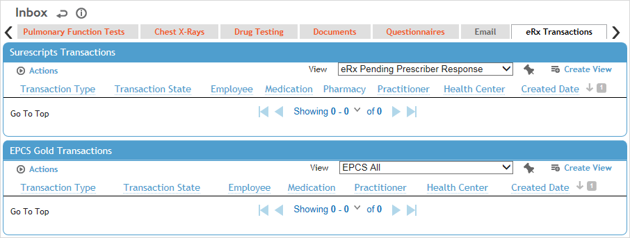

If you are set up as an eRx Prescriber, the eRx Transactions tab allows you to view all Surescripts and EPCS Gold transactions that were initiated by or involve you (for example, a transaction would appear in the list if you got married and either you or the eRx Admin changed your name in the system).
From this tab you can check on the status of eRx transactions, manage refill requests, view pending eRx messages and launch the EPCS Gold Prescriber Dashboard.
The tab provides several views that enable you to view all transactions or filter them to view just the ones that have errors, are completed, or are pending action by the ePrescriber or pharmacy. The tab also provides a view of administrative transactions relating to your eRx privileges.
